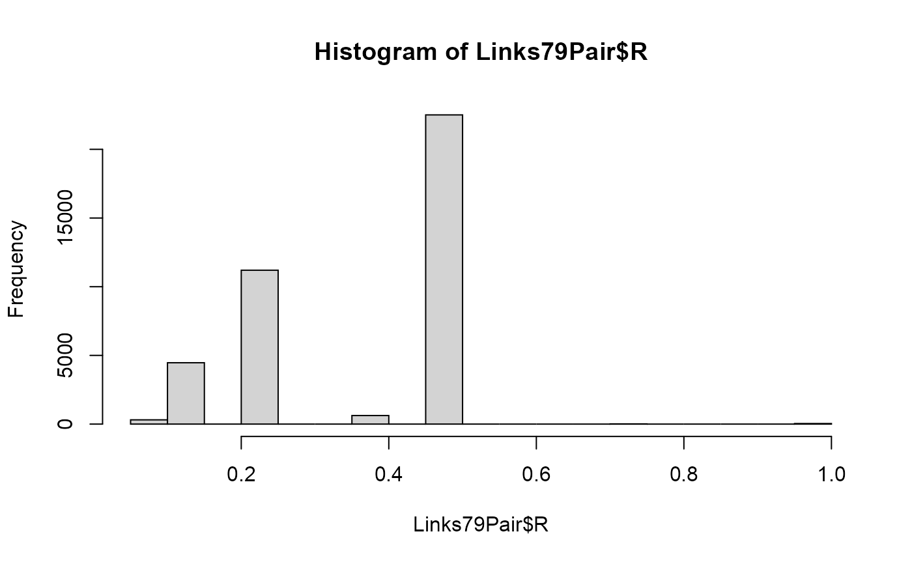

R/nlsy-links.R
NlsyLinks-package.RdUtilities and kinship information for Behavior Genetics and Developmental research using the NLSY. Researchers and grad students interested using the NLSY for Behavior Genetics and family research, please start with our 2016 article, 'The NLSY Kinship Links: Using the NLSY79 and NLSY-Children Data to Conduct Genetically-Informed and Family-Oriented Research.
This package considers both Gen1 and Gen2 subjects. "Gen1" refers to subjects in the original NLSY79 sample (http://www.bls.gov/nls/nlsy79.htm). "Gen2" subjects are the biological children of the Gen1 females -ie, those in the NLSY79 Children and Young Adults sample (http://www.bls.gov/nls/nlsy79ch.htm).
The release version is available through CRAN by
running install.packages('NlsyLinks').
The most recent development version is available through GitHub by
running
devtools::install_github (repo = 'LiveOak/NlsyLinks')
(make sure devtools is already installed).
If you're having trouble with the package, please install the development version. If this doesn't solve
your problem, please create a new issue, or email Will.
This package's development was largely supported by the NIH Grant 1R01HD65865, "NLSY Kinship Links: Reliable and Valid SiblingIdentification" (PI: Joe Rodgers). A more complete list of research articles using NLSY Kinship Links is maintained on our package'swebsite.
Rodgers, Joseph Lee, & Kohler, Hans-Peter (2005). Reformulating and simplifying the DF analysis model. Behavior Genetics, 35 (2), 211-217.
Rodgers, J.L., Bard, D., Johnson, A., D'Onofrio, B., & Miller, W.B. (2008). The Cross-Generational Mother-Daughter-Aunt-Niece Design: EstablishingValidity of the MDAN Design with NLSY Fertility Variables.. Behavior Genetics, 38, 567-578.
D'Onofrio, B.M., Van Hulle, C.A., Waldman, I.D., Rodgers, J.L., Rathouz, P.J., & Lahey, B.B. (2007). Causal inferences regarding prenatal alcoholexposure and childhood externalizing problems.. Archives of General Psychiatry, 64, 1296-1304.
Rodgers, J.L. & Doughty, D. (2000). Genetic and environmental influenceson fertility expectations and outcomes using NLSY kinship data. In J.L. Rodgers, D. Rowe, & W.B. Miller (Eds.) Genetic influences on fertility and sexuality. Boston: Kluwer Academic Press.
Cleveland, H.H., Wiebe, R.P., van den Oord, E.J.C.G., & Rowe, D.C. (2000). Behavior problems among children from different family structures: Theinfluence of genetic self-selection. Child Development, 71, 733-751.
Rodgers, J.L., Rowe, D.C., & Buster, M. (1999). Nature, nurture, and firstsexual intercourse in the USA: Fitting behavioural genetic models to NLSYkinship data. Journal of Biosocial Sciences, 31.
Rodgers, J.L., Rowe, D.C., & Li, C. (1994). Beyond nature versus nurture:DF analysis of nonshared influences on problem behaviors. Developmental Psychology, 30, 374-384.
library(NlsyLinks) # Load the package into the current R session. summary(Links79Pair) # Summarize the five variables.#> ExtendedID SubjectTag_S1 SubjectTag_S2 R #> Min. : 2 Min. : 200 Min. : 201 Min. :0.062 #> 1st Qu.: 3045 1st Qu.: 304500 1st Qu.: 304504 1st Qu.:0.250 #> Median : 5976 Median : 597602 Median : 598001 Median :0.500 #> Mean : 5830 Mean : 583280 Mean : 584537 Mean :0.381 #> 3rd Qu.: 8422 3rd Qu.: 842202 3rd Qu.: 844503 3rd Qu.:0.500 #> Max. :12675 Max. :1267500 Max. :1267501 Max. :1.000 #> NA's :3674 #> RelationshipPath #> Gen1Housemates: 5302 #> Gen2Siblings :11088 #> Gen2Cousins : 4995 #> ParentChild :11504 #> AuntNiece : 9884 #> #>hist(Links79Pair$R) # Display a histogram of the Relatedness values.table(Links79Pair$R) # Create a table of the Relatedness values for the whole sample.#> #> 0.0625 0.125 0.25 0.375 0.5 0.75 1 #> 309 4465 11183 610 22482 12 38# NOT RUN { # Install/update NlsyLinks with the release version from CRAN. install.packages('NlsyLinks') # Install/update NlsyLinks with the development version from GitHub #install.packages('devtools') #Uncomment if 'devtools' isn't installed already. devtools::install_github('LiveOak/NlsyLinks') # }